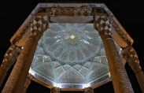
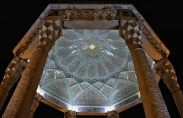

Persepolis
the royal city of Persepolis ranks among the archaeological sites which have no equivalent and which bear unique witness to a most ancient civilization.
Vakil Bazzar
Vakil Bazaar has been the beating heart of the city since it was born and many merchants used to and still go to this bazaar. Vakil Bazaar was registered in the Iran National Heritage list in 1972.
Eram Garden
ERAM GARDEN (BAGH-E ERAM), LOCATED along the northern shore of the Khoshk River in Shiraz, is one of the most famous and beautiful Persian gardens in all of Iran